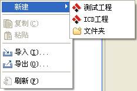
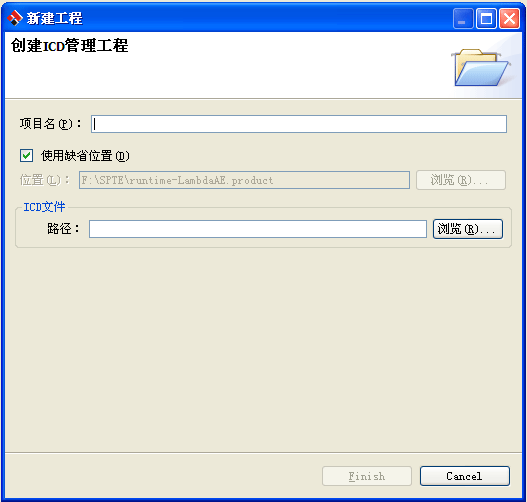
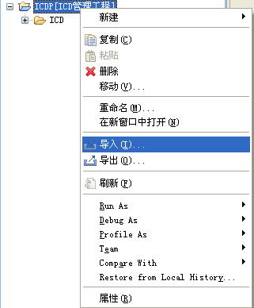
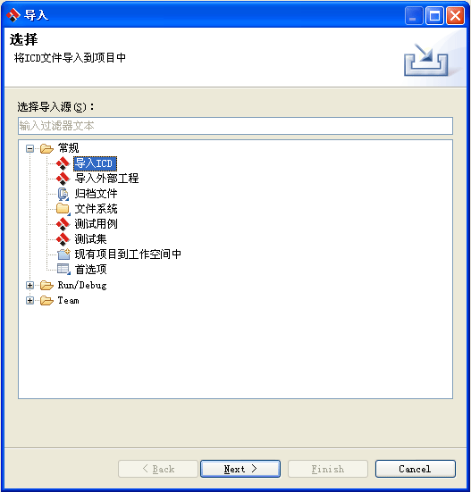
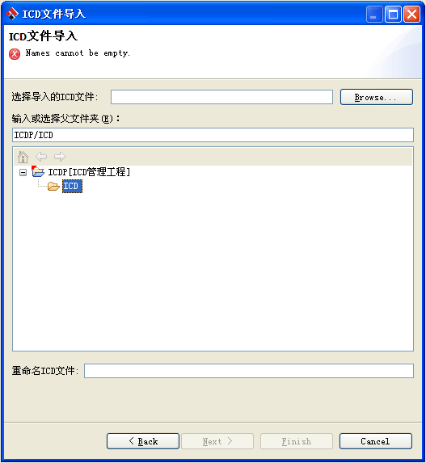
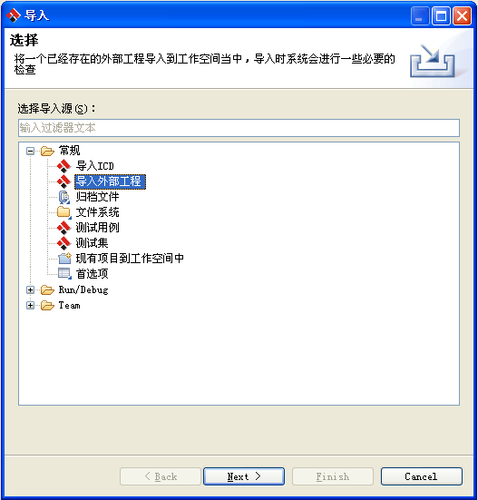

-
将鼠标移动到测试工程视图上，然后点击鼠标邮件，从菜单上选择新建->ICD工程
如下图所示

- 在弹出到对话框中输入项目名称和ICD文件的路径
如下图所示

- 点击Finish按钮之后，系统会在工程视图中创建一个ICD管理工程，如下图所示
-
将鼠标移动到ICD管理工程上，然后点击鼠标右键，从弹出的菜单中选择导入
如下图所示

-
从弹出的对话框中选择常规->导入ICD ，如下图所示

-
点击Next按钮，弹出ICD文件导入对话框，在对话框中选择Browse...按钮，从弹出的文件对话框中选择需要导入的ICD文件，
然后再从下面的工程列表中选择导入的目标目录，你还可以从重命名输入框中为导入的ICD文件重新输入一个名字，最后点击Finish按钮。
ICD文件导入对话框，如下图所示

-
在工程视图上点击鼠标邮件，从弹出的菜单中选择导入，如下图所示
-
从弹出的对话狂中选择常规->导入外部工程，如下图所示

-
点击Next按钮，弹出导入对话框，选择浏览(R)按钮，从弹出的文件对话框中选择需要导入的ICD工程，然后点击Finish按钮，如下图所示
注意：在导入ICD工程之后，如果导入的工程当中包被当前工作空间下测试工程中的测试用例所引用的ICD文件，则会更新问题视图中的错误信息